########################################################################################
############## Forecasting: SARIMA models ############################
########################################################################################
library(MLTools)
library(fpp2)
library(readxl)
library(tidyverse)
library(TSstudio)
library(lmtest) #contains coeftest function
library(tseries) #contains adf.test function2025_09_24 ARIMA, lecture notes
Preliminaries
Set working directory
setwd(dirname(rstudioapi::getActiveDocumentContext()$path))Car Registration Example
Load dataset
fdata <- read_excel("CarRegistrations.xls")Visualize the first rows:
head(fdata)# A tibble: 6 × 2
Fecha CarReg
<dttm> <dbl>
1 1960-01-01 00:00:00 3.36
2 1960-02-01 00:00:00 4.38
3 1960-03-01 00:00:00 4.06
4 1960-04-01 00:00:00 5.38
5 1960-05-01 00:00:00 6.31
6 1960-06-01 00:00:00 4.02Convert character columns to R date type
fdata$Fecha <- as.Date(fdata$Fecha, format = "%d/%m/%Y")
head(fdata)# A tibble: 6 × 2
Fecha CarReg
<date> <dbl>
1 1960-01-01 3.36
2 1960-02-01 4.38
3 1960-03-01 4.06
4 1960-04-01 5.38
5 1960-05-01 6.31
6 1960-06-01 4.02Order the table by date (using the pipe operator)
fdata <- fdata %>% arrange(Fecha)This is the same as: fdata <- arrange(fdata, Fecha)
Check for missing dates (time gaps)
range(fdata$Fecha)[1] "1960-01-01" "1999-12-01"Create a complete sequence of months with the same range and compare it to the dates in our data.
date_range <- seq.Date(min(fdata$Fecha), max(fdata$Fecha), by = "months")
date_range[!date_range %in% fdata$Fecha]Date of length 0We also check for duplicates
fdata %>%
select(Fecha) %>%
duplicated() %>%
which()integer(0)Check for missing data (NA) in time series value columns
sum(is.na(fdata$CarReg))[1] 0Convert it to a time series object
This is monthly data, so the frequency is 12. The series start in January. If it starts in e.g. April we would use start = c(1960, 4)
freq <- 12
start_date <- c(1960, 1)
y <- ts(fdata$CarReg, start = start_date, frequency = freq)Time plot:
autoplot(y) +
ggtitle("Car registrations") +
xlab("Year") + ylab("Number registered (thousands)")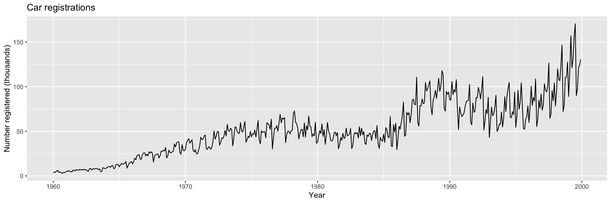
Train/test split
The train/test split method in forecasting needs to take the temporal structure into account, as illustrated in this picture (from Section 3.4 of Hyndman & Athanasopoulos (2018))

n <- length(y)We will leave the last 5 years for validation
n_test <- floor(5 * freq)
y_split <- ts_split(y, sample.out = n_test)
y.TR <- y_split$train
y.TV <- y_split$testAlternatively, with subset
# Line 39 of Lab4
y.TR <- subset(y, end = length(y) - 5 * 12)
y.TV <- subset(y, start = length(y) - 5 * 12 + 1)Or even with head and tail:
y.TR <- head(y, length(y) - 5 * 12)
y.TV <- tail(y, 5 * 12) In fact it is usually a good idea to check the split using head and tail to see the last elements of training and the first ones of test:
tail(y.TR) Jul Aug Sep Oct Nov Dec
1994 104.812 65.899 65.201 71.931 68.761 93.883head(y.TV) Jan Feb Mar Apr May Jun
1995 54.513 66.954 95.812 74.758 82.887 104.472And let us also visualize the split.
autoplot(y.TR, color = "orange") +
autolayer(y.TV, color = "blue")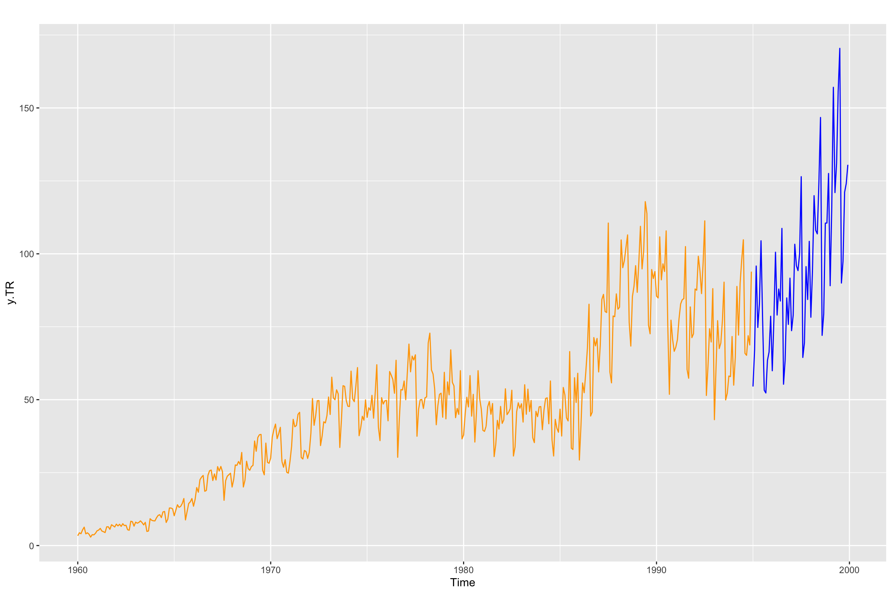
What if I don’t know the sampling rate of the time series?
Donwload the following data file: fdata2.dat
Let us use plots to explore the series
fdata2 <- ts(read.table("fdata2.dat", sep = ""))
ggtsdisplay(fdata2, lag.max = 80)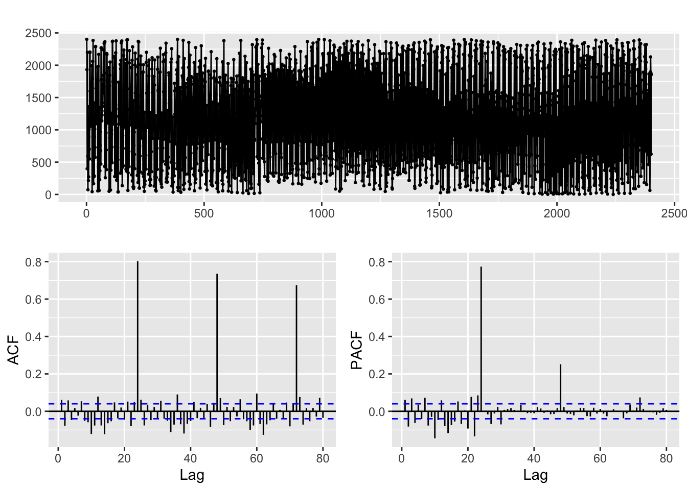
The time plot does not clearly show the frequency (in cases like this you should try zooming in, though!). But the ACF is more telling, it shows significant correlations at what seems to be lags = 24, 48, 96, … (so the sampling rate of this data seems to be … daily, weekly, … ?)
Let us try that and emphasize the lags we suspect to be relevant:
freq <- 24
ggAcf(fdata2, lag.max = 80)+
geom_vline(xintercept = (1:4) * freq, color = "green", alpha = 0.25, size=2)Warning: Using `size` aesthetic for lines was deprecated in ggplot2 3.4.0.
ℹ Please use `linewidth` instead.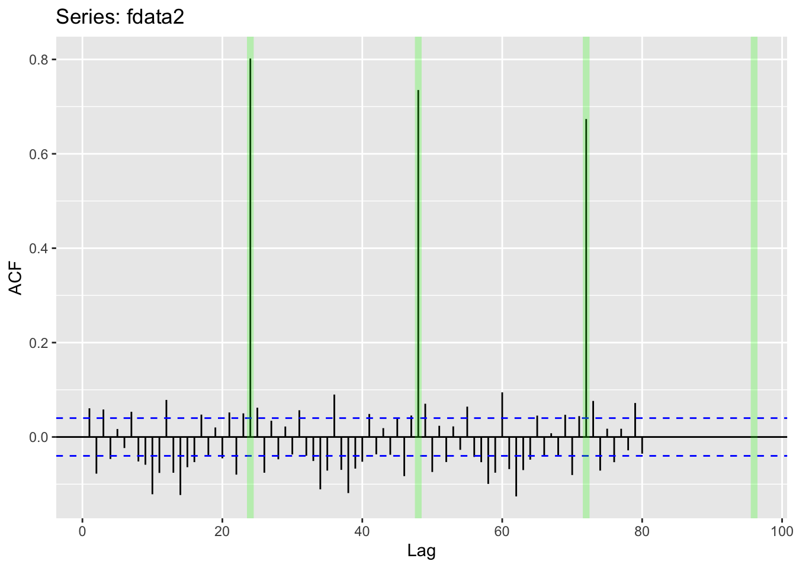
Applying a seasonal difference
ggtsdisplay(diff(fdata2, lag = freq), lag.max = 5 * freq)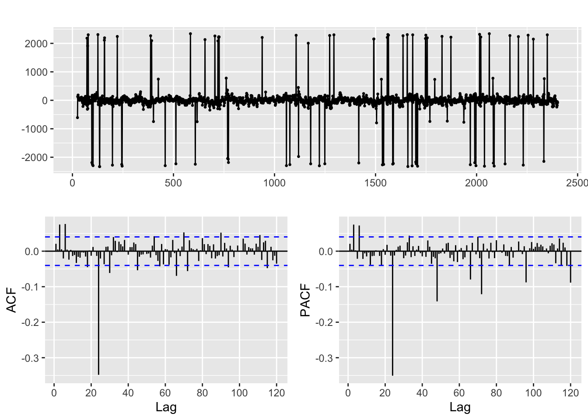
Identification and fitting process
Let us return to the Car Registration example
Box-Cox transformation
# Line 48 of Lab4
Lambda <- BoxCox.lambda.plot(y.TR, window.width = 12)`geom_smooth()` using formula = 'y ~ x'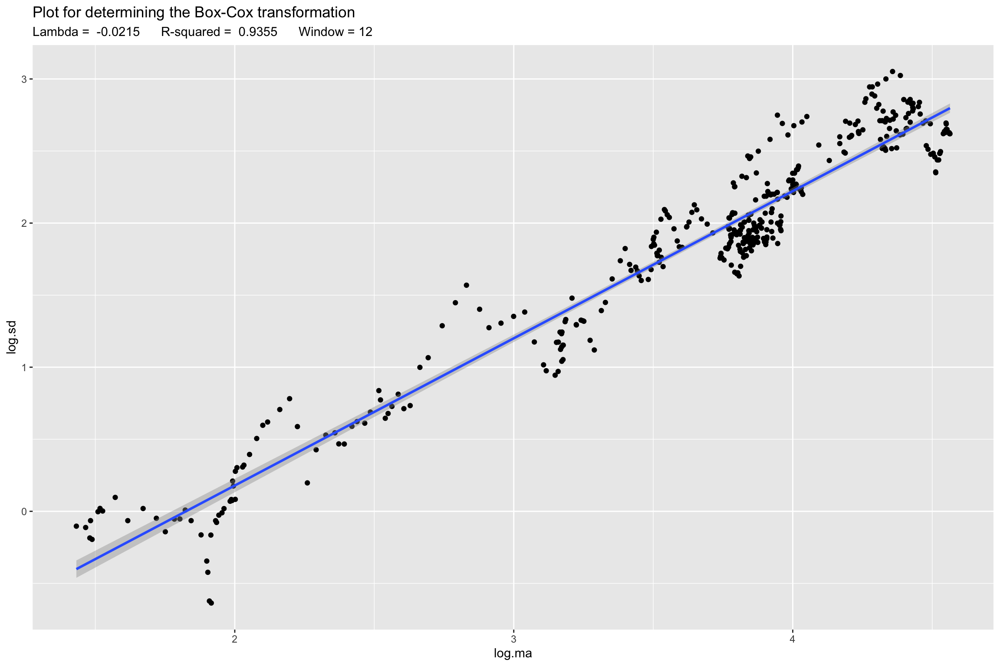
# Line 51 of Lab4
z <- BoxCox(y.TR, Lambda)# Line 39 of Lab4
p1 <- autoplot(z)
p2 <- autoplot(y)
gridExtra::grid.arrange(p1, p2, nrow = 2 )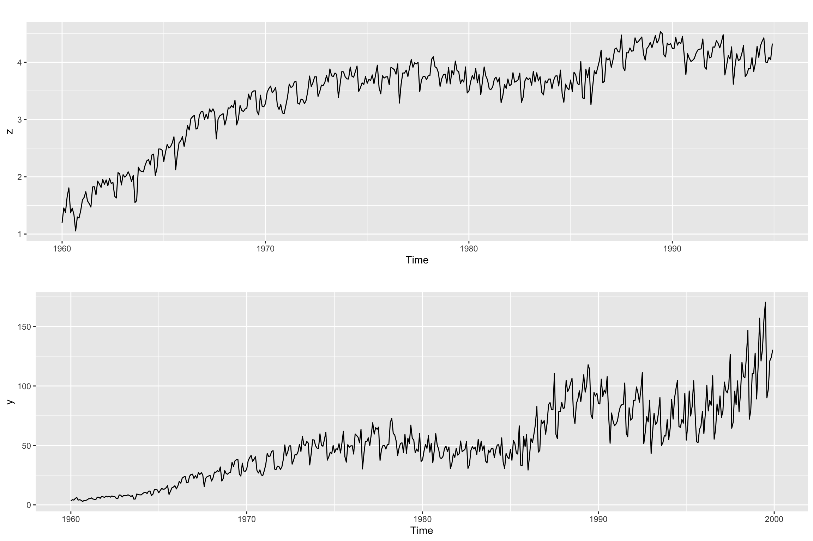
Differencing
# Line 58 of Lab4
#recall if the ACF decreases very slowly -> needs differentiationggtsdisplay(z,lag.max = 100)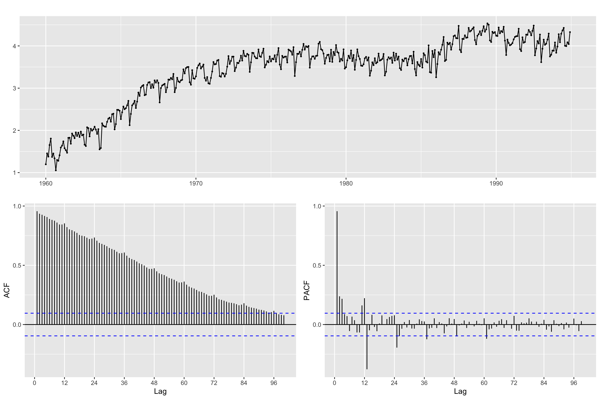
Seasonal Differencing
It is generally better to start with seasonal differencing when a time series exhibits both seasonal and non-seasonal patterns.
# Line 62 of Lab4
B12z<- diff(z, lag = freq, differences = 1)We use the ACF and PACF to inspect the result
ggtsdisplay(B12z,lag.max = 4 * freq)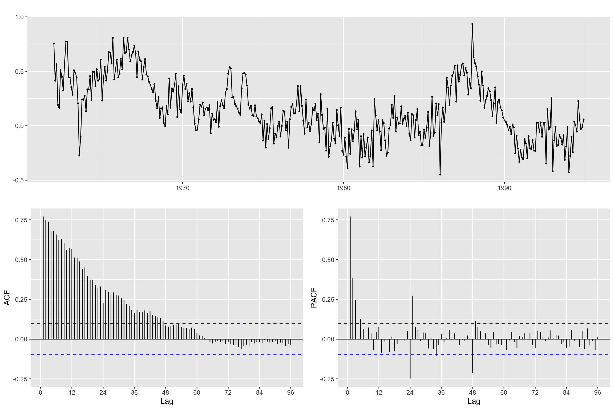
Regular Differencing (without seasonal)
# Line 66 of Lab4
Bz <- diff(z,differences = 1)ggtsdisplay(Bz, lag.max = 4 * freq)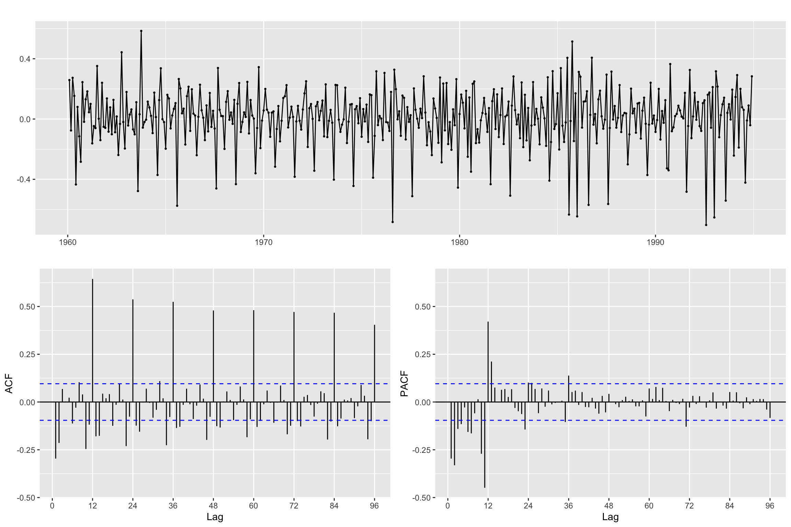
Both regular & seasonal Differentiation
# Line 70 of Lab4
B12Bz <- diff(Bz, lag = freq, differences = 1)ggtsdisplay(B12Bz, lag.max = 4 * freq)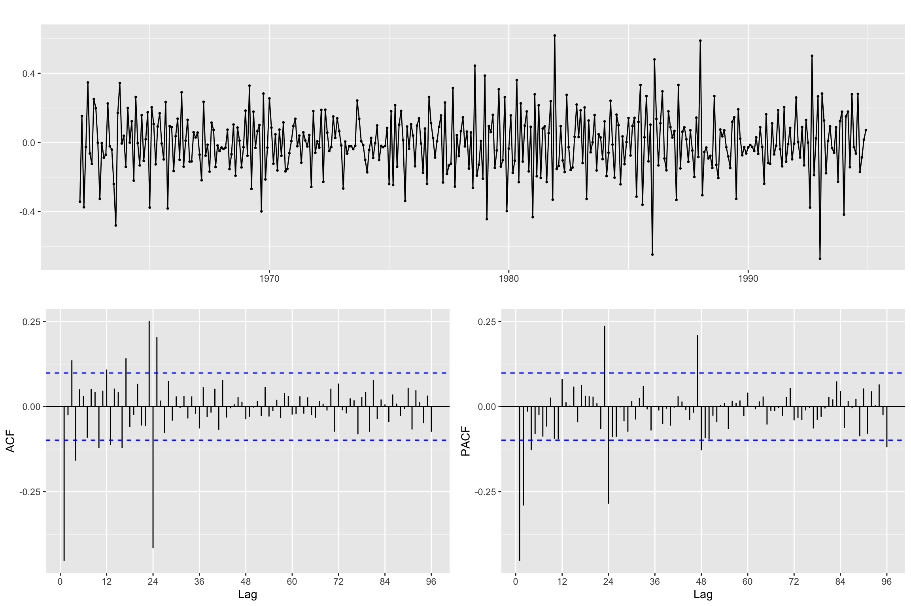
Remember, when you apply both differences the order does not matter. Here we check that visually:
B_B12z<- diff(B12z, differences = 1)# Line 75 of Lab4
autoplot(B12Bz, color = "blue", size = 2) + autolayer(B_B12z, color = "orange", size = 0.5)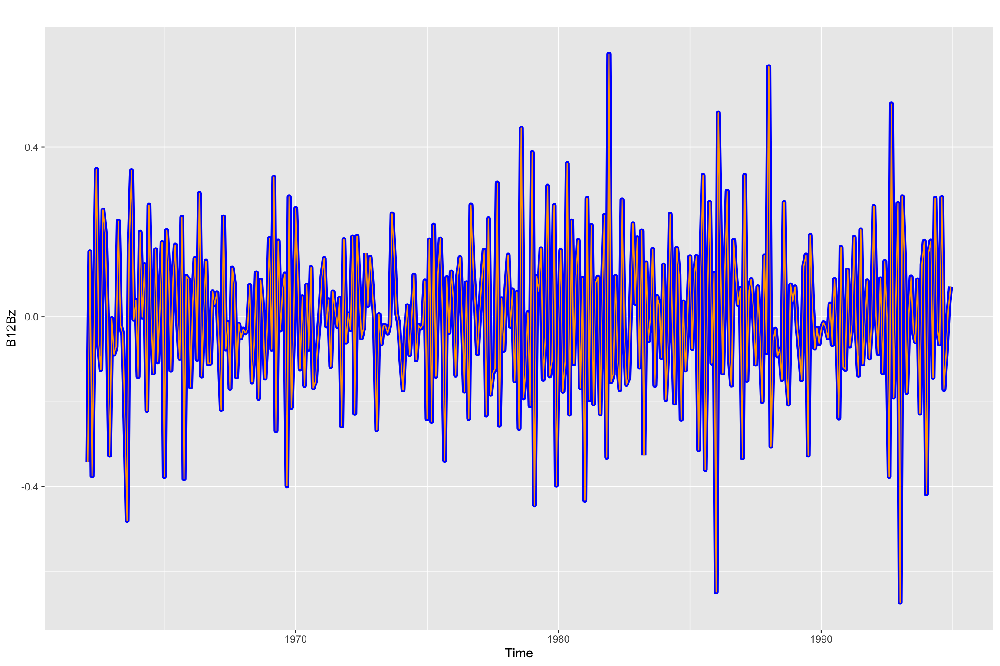
Model Order (p, d, q)(P, D, Q)_s selection
Now, using the results above, we select both the regular d and the seasonal D orders of differencing and the ARMA structure, both regular and seasonal
p <- 0
d <- 1
q <- 1
P <- 1
D <- 1
Q <- 1Fit seasonal model with estimated order
# Line 80 (modified) of Lab4
arima.fit <- Arima(y.TR,
order=c(p, d, q),
seasonal = list(order=c(P, D, Q), period=freq),
lambda = Lambda,
include.constant = FALSE)Model Diagnosis
Summary of training errors and estimated coefficients
# Line 86 of Lab4
summary(arima.fit)Series: y.TR
ARIMA(0,1,1)(1,1,1)[24]
Box Cox transformation: lambda= -0.02149828
Coefficients:
ma1 sar1 sma1
-0.5997 0.0877 -0.8988
s.e. 0.0432 0.0670 0.0655
sigma^2 = 0.01475: log likelihood = 255.92
AIC=-503.83 AICc=-503.73 BIC=-487.92
Training set error measures:
ME RMSE MAE MPE MAPE MASE
Training set -0.432281 6.160028 4.327191 -2.242973 9.844774 0.6289316
ACF1
Training set -0.03946431Statistical significance of estimated coefficients
# Line 87 of Lab4
coeftest(arima.fit)
z test of coefficients:
Estimate Std. Error z value Pr(>|z|)
ma1 -0.599729 0.043169 -13.8927 <2e-16 ***
sar1 0.087686 0.066970 1.3093 0.1904
sma1 -0.898751 0.065466 -13.7285 <2e-16 ***
---
Signif. codes: 0 '***' 0.001 '**' 0.01 '*' 0.05 '.' 0.1 ' ' 1Root plot
# Line 88 of Lab4
autoplot(arima.fit)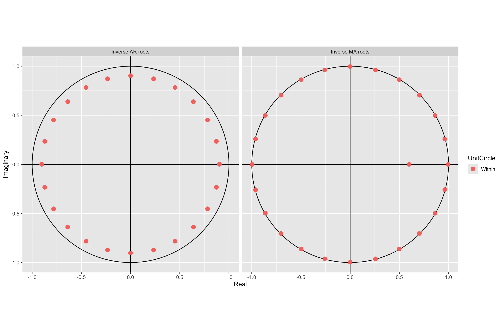
Check residuals
# Line 91 of Lab4
CheckResiduals.ICAI(arima.fit, bins = 100, lag=100)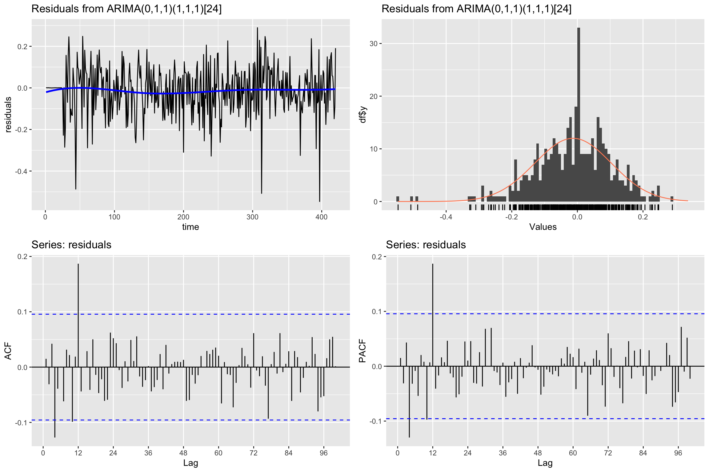
Ljung-Box test
data: Residuals from ARIMA(0,1,1)(1,1,1)[24]
Q* = 89.452, df = 97, p-value = 0.6944
Model df: 3. Total lags used: 100If residuals are not white noise, change order of ARMA
Check the fitted values
# Line 94 of Lab4
autoplot(y.TR, series = "Real") +
forecast::autolayer(arima.fit$fitted, series = "Fitted")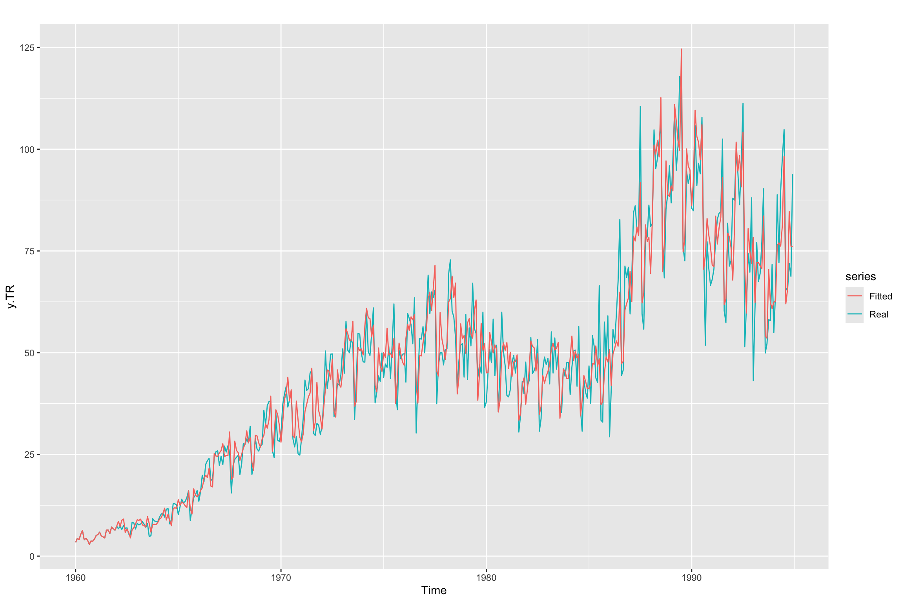
Future forecast and validation
# Line 99 of Lab4
y_est <- forecast::forecast(y.TR, model=arima.fit, h=freq)
head(y_est$mean, n = 12) Jan Feb Mar Apr May Jun Jul
1995 72.24402 77.72355 92.74988 87.79493 89.38275 91.23070 104.15455
Aug Sep Oct Nov Dec
1995 64.00357 66.17088 84.55637 82.06407 85.81810xmin <- 1995
xmax <- 1996
ymin <- 0
ymax <- Inf
autoplot(subset(y, start=length(y.TR) - 30, end=length(y.TR) + freq)) +
autolayer(y_est, alpha = 0.5) +
annotate("rect", xmin=xmin, xmax=xmax, ymin=ymin, ymax= ymax, alpha=0.2, fill="orange")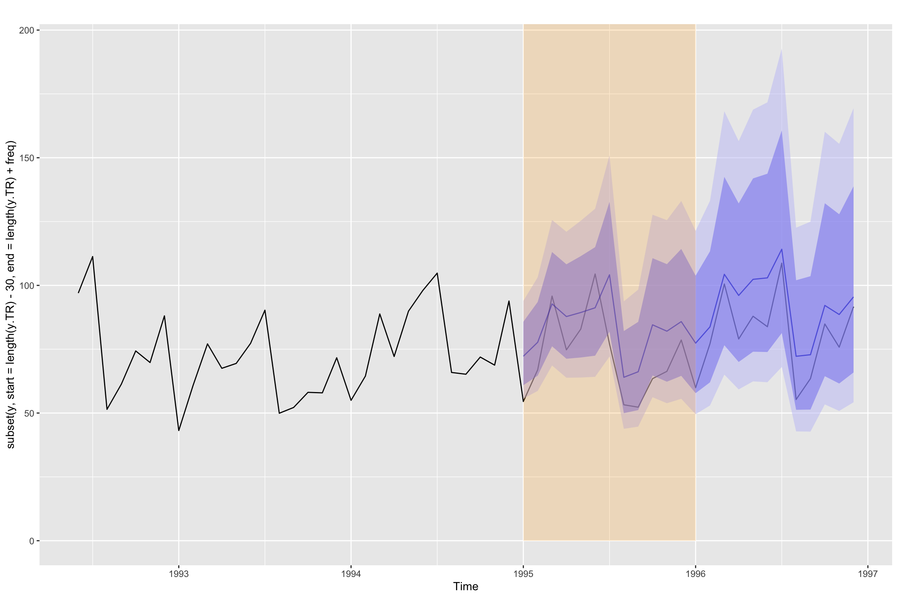
Validation error for h = 1
Obtain the forecast in validation for horizon = 1 using the trained parameters of the model. We loop through the validation period, adding one point of the time series each time and forecasting the next value (h = 1).
# Line 104 of Lab4
y.TV.est <- y * NA# Line 106 of Lab4
for (i in seq(length(y.TR) + 1, length(y), 1)){
y.TV.est[i] <- forecast::forecast(subset(y, end=i-1),
model = arima.fit,
h=1)$mean
}Next we plot the series and both forecasts. We limit the values depicted in the plot to improve the visualization. As you can see the loop forecasts (with h = 1) appear to be better than the h=12 forecasts in y_est.
# Line 116 of Lab4
autoplot(subset(y, start=length(y.TR) - 24, end = length(y.TR) + 12)) +
forecast::autolayer(y_est$mean, color="blue") +
forecast::autolayer(subset(y.TV.est, start = length(y.TR) + 1,
end = length(y.TR) + 12), color="red")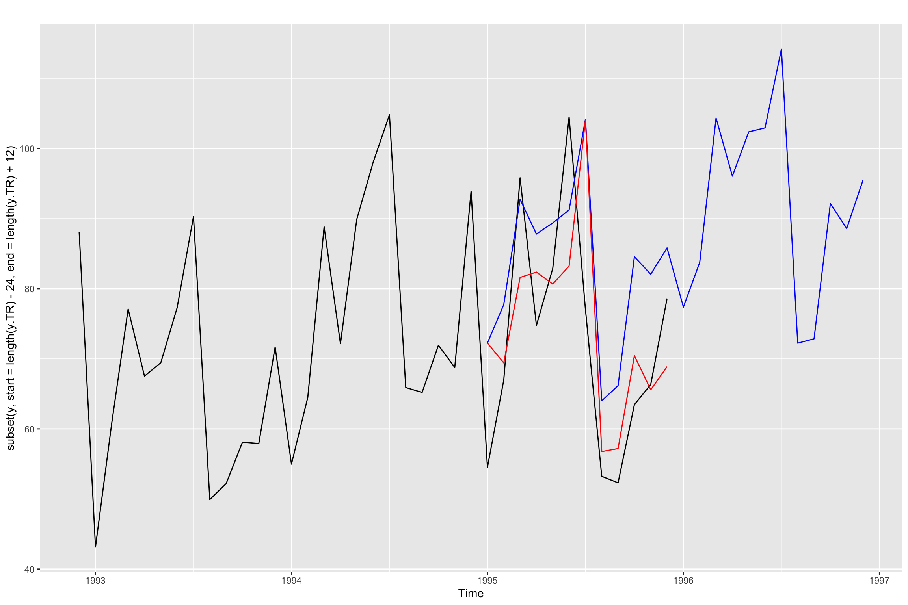
Finally we compute the validation errors
# Line 120 of Lab4
accuracy(subset(y.TV.est, start = length(y.TR) + 1), y) ME RMSE MAE MPE MAPE ACF1 Theil's U
Test set 1.643639 10.10724 7.91742 0.04251236 8.459256 -0.238131 0.425696Uncomment the following line to see the direct computation of RSME
sqrt(mean((y.TV.est - y.TV)^2))[1] 10.10724Additional Code
We have seen above that the result of using forecast is different from the result of the validation loop. Both are using the fitted model to forecast, so what is the difference?
Below we will explicitly use the fitted model coefficients to obtain the forecasted values, both for the validation loop and for the forecast function. Keep in mind that the Arima function incorporates the BoxCox transformation. So to make things simpler, we will work directly with z instead of y.
Recall that the equation of our model is: \[
(1 - \Phi_1B^{12})(1 - B)(1 - B^{12})z_t =
(1 - \theta_1 B)(1 - \Theta_1 B^{12})\epsilon_t
\] But we can expand this equation and reorganize it into a forecasting equation: \[
z_t = z_t = z_{t-1} + z_{t-12} - z_{t-13} +
\Phi_1 (z_{t-12} - z_{t-13} - z_{t-24} + z_{t-25}) + \\
\epsilon_t + \theta_1 \epsilon_{t-1} + \Theta_1 \epsilon_{t-12} +
\theta_1 \Theta_1 \epsilon_{t-13}
\] Similarly we can do the same with the error term to get \[
\epsilon_t = z_t - z_{t-1} - z_{t-12} + z_{t-13} -
\phi_1 (z_{t-12} - z_{t-13} - z_{t-24} + z_{t-25}) - \\
\theta_1 \epsilon_{t-1} - \Theta_1 \epsilon_{t-12} - \theta_1 \Theta_1 \epsilon_{t-13}
\] The right hand side of these equation only contains lags of \(z_t\) and \(\epsilon_t\). Section 9.8 of Hyndman & Athanasopoulos (2021) explains how to apply this forecasting equations. In summary: when you start forecasting the first values you replace past values of \(z\) with training set values and \(\epsilon\) values with the residuals of the fitted model (also corresponding to training). As you move further into the test set, unknown values of \(z\) and \(\epsilon\) will be needed. The difference between forecast and the validation loop is in deciding what values we use for \(z\) and \(\epsilon\) for \(t\) values corresponding to the test set. Let us explore this in the code.
So we begin by splitting z into training and test. Technical note: Lambda was determined using only the training set, and we apply the same Lambda to the test set to prevent data leakage.
z <- BoxCox(y, Lambda)
z.TR <- subset(z, end = length(y.TR))
z.TV <- subset(z, start = length(y.TR) + 1)We fit a seasonal model to z with the same order we used for y, but setting lambda equal to 1.
arima.fit <- Arima(z.TR,
order=c(p, d, q),
seasonal = list(order=c(P, D, Q), period=12),
lambda = 1,
include.constant = FALSE)In the code below you can verify that the model fit is equivalent to what we obtained above for y.
summary(arima.fit)Series: z.TR
ARIMA(0,1,1)(1,1,1)[12]
Box Cox transformation: lambda= 1
Coefficients:
ma1 sar1 sma1
-0.5936 0.2317 -0.9189
s.e. 0.0435 0.0611 0.0394
sigma^2 = 0.01329: log likelihood = 294.41
AIC=-580.82 AICc=-580.72 BIC=-564.78
Training set error measures:
ME RMSE MAE MPE MAPE MASE
Training set -0.008851714 0.1130747 0.08373548 -0.3647752 2.684318 0.5294322
ACF1
Training set 0.02378263coeftest(arima.fit)
z test of coefficients:
Estimate Std. Error z value Pr(>|z|)
ma1 -0.593623 0.043517 -13.6413 < 2.2e-16 ***
sar1 0.231663 0.061055 3.7943 0.000148 ***
sma1 -0.918918 0.039365 -23.3437 < 2.2e-16 ***
---
Signif. codes: 0 '***' 0.001 '**' 0.01 '*' 0.05 '.' 0.1 ' ' 1autoplot(arima.fit)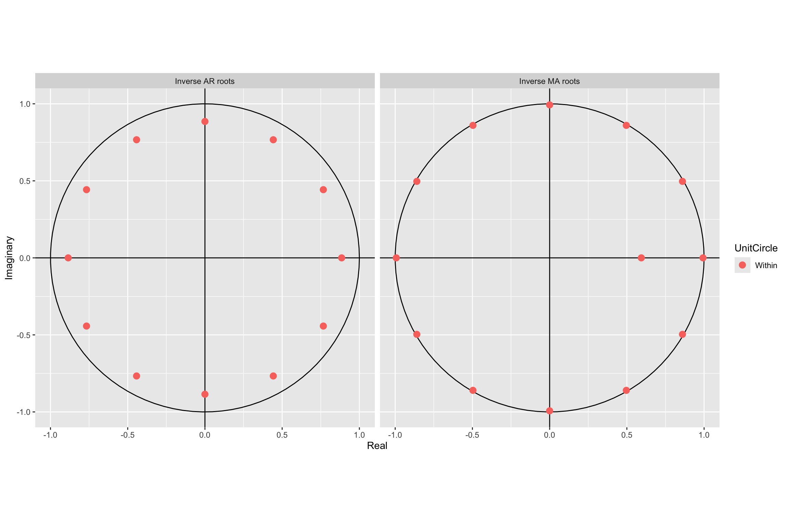
CheckResiduals.ICAI(arima.fit, bins = 100, lag=100)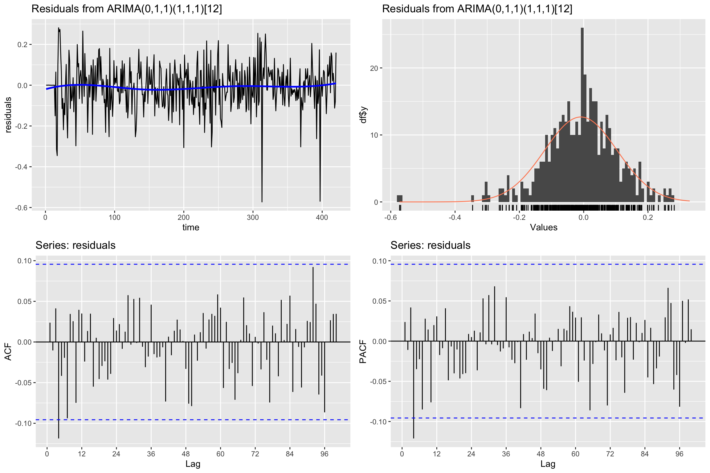
Ljung-Box test
data: Residuals from ARIMA(0,1,1)(1,1,1)[12]
Q* = 80.576, df = 97, p-value = 0.8858
Model df: 3. Total lags used: 100Now let us begin using this model to forecast the test set values.
We begin by using the forecast function to forecast all the values in the test set. That is, we set the forecasting horizon h equal to the length of the test set,
z_est <- forecast::forecast(arima.fit, h=length(z.TV))Next we will generate three additional versions of the forecasts, using a loop as we did before.
- The first forecast
z.TV.estis exactly what we did before, but using z instead of y. - The second one
z.TV.est2will use the two forecasting equations (with the fitted coefficients) and will always use actual values of \(z_t\) in the test set. The error terms will also be updated with the second forecasting equation. - The third one
z.TV.est3will also use the forecasting equation, but it will use its own forecasted values of \(z_t\) in the test set. The error terms for \(t\) in the test set will all be set to zero.
First we create empty time series to store the different forecasts.
z.TV.est <- z * NA
z.TV.est2 <- z * NA
z.TV.est3 <- z * NAWe make the training values of \(z_t\) available to the forecasting equation.
z.TV.est[1:length(z.TR)] <- z.TR
z.TV.est2[1:length(z.TR)] <- z.TR
z.TV.est3[1:length(z.TR)] <- z.TRSimilarly, we prepare two versions of \(\epsilon_t\) containing the training residuals, to be used by the second and third procedure. Even though they look initially the same, these error terms are updated differently: the second procedure really updates them with a forecast equation, whereas the third one leaves the test error values as 0.
w2 <- z * 0
w2[1:length(z.TR)] <- residuals(arima.fit)
w3 <- z * 0
w3[1:length(z.TR)] <- residuals(arima.fit)We store the coefficients of the model (_s indicates seasonal)
Phi_s <- coefficients(arima.fit)["sar1"]
theta <- coefficients(arima.fit)["ma1"]
Theta_s <- coefficients(arima.fit)["sma1"]And now we get the forecasts in a loop.
for (i in seq(length(z.TR) + 1, length(y), 1)){# loop for validation period
# The first one is simply what we did in the validation loop above
z.TV.est[i] <- forecast::forecast(subset(z, end=i-1),
model = arima.fit,
h=1)$mean
# In the second forecast procedure we use the two forecasting equations, with
# real values of z and updating the errors with the second equation.
z.TV.est2[i] <- z[i - 1] + z[i - 12] - z[i-13] +
Phi_s * (z[i-12] - z[i-13] - z[i - 24] + z[i-25]) +
w2[i] + theta * w2[i - 1] + Theta_s * w2[i - 12] + theta * Theta_s * w2[i - 13]
w2[i] = z[i] - z[i-1] - z[i-12] + z[i-13] -
Phi_s * (z[i-12] - z[i-13] - z[i-24] + z[i-25]) -
theta * w2[i-1] - Theta_s * w2[i-12] - theta * Theta_s * w2[i-13]
# And in the third one we update the forecasted values z.TV.est3 using their
# previous values and we do not update the error terms (they stay 0)
z.TV.est3[i] <- z.TV.est3[i - 1] + z.TV.est3[i - 12] - z.TV.est3[i-13] +
Phi_s * (z.TV.est3[i-12] - z.TV.est3[i-13] - z.TV.est3[i - 24] + z.TV.est3[i-25]) +
w3[i] + theta * w3[i - 1] + Theta_s * w3[i - 12] + theta * Theta_s * w3[i - 13]
}Let us examine the results, comparing the first values for all the forecast procedures:
k <- 10Using forecast function directly (we called this s_est above):
head(z_est$mean, k) Jan Feb Mar Apr May Jun Jul Aug
1995 4.099109 4.179055 4.388351 4.294830 4.369889 4.398921 4.499703 4.063269
Sep Oct
1995 4.066478 4.261535Using the validation loop as explained in today’s session
subset(z.TV.est, start = length(z.TR) + 1, end = length(z.TR) + k) Jan Feb Mar Apr May Jun Jul Aug
1995 4.099109 4.070260 4.258979 4.200732 4.243077 4.260375 4.427713 3.877607
Sep Oct
1995 3.853199 4.023954Using the two forecast equations with actual z values and error updates
subset(z.TV.est2, start = length(z.TR) + 1, end = length(z.TR) + k) Jan Feb Mar Apr May Jun Jul Aug
1995 4.099130 4.070274 4.258966 4.200749 4.243050 4.260350 4.427711 3.877596
Sep Oct
1995 3.853198 4.023978Using only the forecasting equation for y and no error update
subset(z.TV.est3, start = length(z.TR) + 1, end = length(z.TR) + k) Jan Feb Mar Apr May Jun Jul Aug
1995 4.099130 4.179070 4.388345 4.294849 4.369871 4.398893 4.499688 4.063245
Sep Oct
1995 4.066459 4.261540The results indicate that, up to small rounding errors there are only two different results:
- the validation loop is doing what we called the second procedure.
- the
forecastfunction is doing what twe called the third procedure.
The updated error values and the use of actual values of the time series explain why the validation loop produces more accurate values. This is illustrated in the plot below:
autoplot(subset(z, start = length(z.TR) - 30), series="Real") +
forecast::autolayer(subset(z.TV.est, start = length(z.TR)), series="Forecasting Loop") +
forecast::autolayer(subset(z.TV.est3, start = length(z.TR)), series="Forecast function")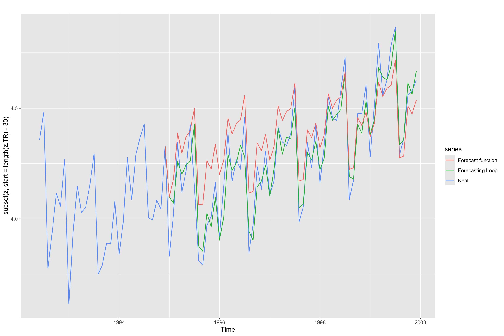
Now we can also compare both approaches through their validation errors.
accuracy(z_est, z) ME RMSE MAE MPE MAPE MASE
Training set -0.008851714 0.1130747 0.08373548 -0.3647752 2.684318 0.5294322
Test set -0.082613248 0.1493240 0.12528694 -2.0788375 2.996520 0.7921486
ACF1 Theil's U
Training set 0.02378263 NA
Test set 0.56407002 0.6401048accuracy(z.TV.est, z) ME RMSE MAE MPE MAPE ACF1
Test set 0.0004523454 0.030467 0.00842029 0.003263153 0.1975652 -0.1771778
Theil's U
Test set 0.1090504As expected, direct use of the forecast function leads to worse predictive performance in the test set.
References
Hyndman, R. J., & Athanasopoulos, G. (2018). Forecasting: Principles and practice, 2nd edition. OTexts. Retrieved from https://otexts.com/fpp2/
Hyndman, R. J., & Athanasopoulos, G. (2021). Forecasting: Principles and practice, 3rd edition. OTexts. Retrieved from https://otexts.com/fpp3/
Krispin, R. (2019). Hands-on time series analysis with r: Perform time series analysis and forecasting using r. Packt Publishing Ltd. Retrieved from https://github.com/PacktPublishing/Hands-On-Time-Series-Analysis-with-R